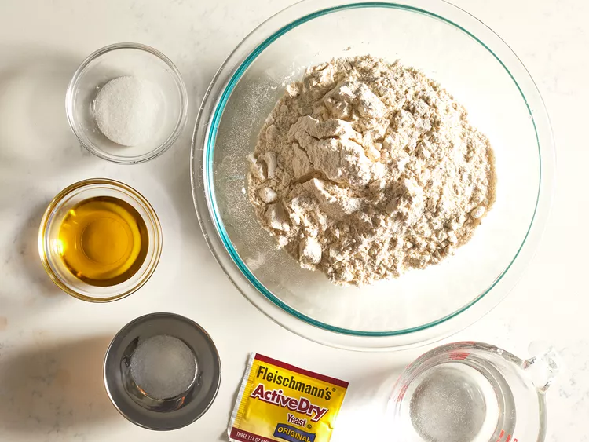
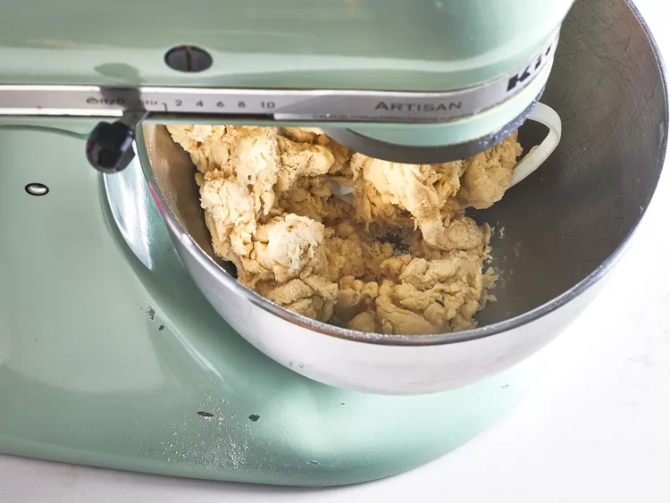

Pizza
Description
This is a great recipe when you don't want to wait for the dough to rize.
You just mix it and allow it to taste for 5 mintues and then it's read to go!
It yields a soft, chewy crust.
Ingredients
- 1 cup warm water (110 degrees F/45 degrees C)
- 1 (.25 ounce) package active dry yeast
- 1 teaspoon white sugar
- 2.5 cups bread flour
- 2 tablespoons olive oil
- 1 teaspoon salt
Directions
-
Gather all ingredients. Preheat oven to 450 degrees F (230 degrees C),
and lightly grease a pizza pan.

-
Place warm water in a bowl; add yeast and sugar.
Mix and let stand until creamy, about 10 minutes.

-
Add flour, oil and salt to the yeast mixture; beat untill smooth.
you can do this by hand or use a stand mixer fitted with a dough hook to make it easier.

-
Let rest for 5 minutes.

-
Turn dough out onto a lightly floured surfae and pat or roll into a 12-inch circle.

-
Transfer to the prepared pizza plan.

-
Spread crust with sauce and toppings of your choice.

-
Bake in the preheated oven until golden brown,15 to 20 minutes.
Remove from the oven and let cool for 5 minutes befoe serving.